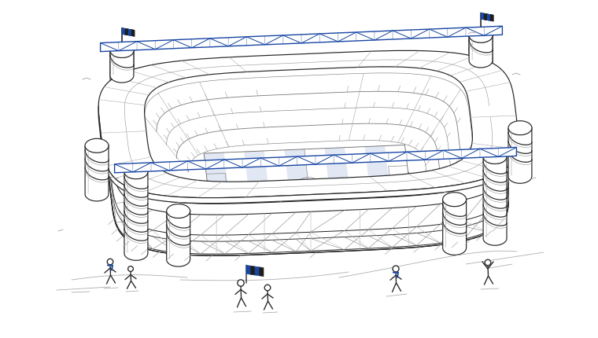

Software Engineer
Develop enterprise solutions that thousands of users operate daily, contributing to software that supports day-to-day work across the business.
SOFTWARE ENGINEER & INTERISTA
Useful software. A little imagination.
I'm a Software Engineer Co-op at an aerospace company, building enterprise solutions that thousands of people use every day.
fejzulovic231@gmail.com · dinof15.github.io · github.com/DinoF15

San Siro, more or less.
A few things I've built.
A little of who I am.
01 / A LITTLE CONTEXT
I'm Dino. I like turning complicated problems into simple, dependable software.
My work has taken me from factory sensors and machine learning research to cloud platforms and enterprise applications. These days, I'm building at Collins Aerospace and continuing my software engineering education at McMaster.
Off the clock, there's a good chance I'm following Inter. This small stadium is a nod to that part of me.
On to the work02 / EXPERIENCE
From applied research to software people rely on.
Develop enterprise solutions that thousands of users operate daily, contributing to software that supports day-to-day work across the business.
Built AWS reporting and analytics platforms, including AI-assisted case summaries, fleet monitoring across thousands of elevators, and a factory intelligence system processing over one million data points each week.
Created predictive maintenance models for hydraulic elevators with scikit-learn and Azure ML, and evaluated vibration, temperature, and sound sensors.
Developed an Azure ML Studio proof of concept for anomaly detection using industrial sensor data, exploring how machine learning could support equipment maintenance.
Developed and deployed a Power Apps application for rotational factory equipment inspections, with barcode workflows and real-time inspection logs.
03 / SELECTED WORK
A few problems I've enjoyed working on.
Full stack / Applied AI
A serverless reporting dashboard that centralizes institutional case data and uses Claude through AWS Bedrock to generate summaries and stakeholder reports.
View source (opens in a new tab)Responsible AI / Data science
A model-governance audit of an automated credit approval system, testing whether postal codes act as a proxy for socioeconomic status through disparate impact ratios, matched-profile comparisons, and a new Postal Code Bias Severity Index.
Cloud / Industrial IoT
RFID tracking, stacklight monitoring, and digital work orders in a real-time factory intelligence platform processing over one million data points each week.
Applied research · Mohawk College
Cloud / Infrastructure as code
A Next.js app where an AI named Diogenes invents tongue-in-cheek context for famous quotes. Built to learn Azure coming from AWS, with the registry, PostgreSQL, and web app provisioned by Terraform and deployed through GitHub Actions.
View source (opens in a new tab)Machine learning / Research
Exploring equipment behavior with Isolation Forest and K-means models to detect anomalies and support predictive maintenance for hydraulic elevators.
Applied machine learning · Mohawk College
04 / THE TOOLKIT
Across the stack. Always learning.
05 / EDUCATION
The foundations, and what comes next.
Software Engineering
Expected 2027 · Hamilton, Ontario
Cloud Computing · Artificial Intelligence
Software Design · Data Analysis
Software Engineering
Hamilton, Ontario
Cloud Computing · Machine Learning
Parallel Processing
06 / THE NEXT CHAPTER
An interesting problem, a project, or a football take.
I'm always up for a good conversation.